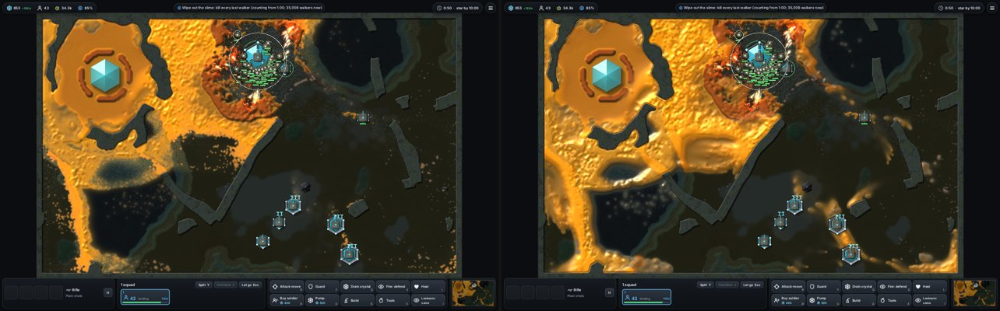

<title>The Trunk's Cords</title>
<meta name="claude:viewport-fit-sides" content="cover">
<link rel="stylesheet" href="https://fonts.googleapis.com/css2?family=Inter:wght@400;500;600&family=Space+Grotesk:wght@500;600&display=swap">
<style>
/* Layout: one column of before-and-after pairs, the counts beside each, on the game's dark ground. */
:root {
  --bg: #f3f1ec; --fg: #1d1f22; --muted: #5d6168; --line: #d9d5cc; --amber: #b8730f; --card: #fbfaf7;
  --display: "Space Grotesk", "Segoe UI", system-ui, sans-serif;
  --body: "Inter", "Segoe UI", system-ui, sans-serif;
}
@media (prefers-color-scheme: dark) { :root:not([data-theme="light"]) {
  --bg: #15171a; --fg: #e8e6e1; --muted: #9a9ea6; --line: #2c3036; --amber: #f0a43a; --card: #1c1f23; color-scheme: dark } }
:root[data-theme="dark"] { --bg: #15171a; --fg: #e8e6e1; --muted: #9a9ea6; --line: #2c3036; --amber: #f0a43a; --card: #1c1f23; color-scheme: dark }
body { background: var(--bg); color: var(--fg); font-family: var(--body); line-height: 1.55; }
main { max-width: 1320px; margin: 0 auto; padding-block: 32px 64px; padding-left: max(16px, env(safe-area-inset-left, 0px)); padding-right: max(16px, env(safe-area-inset-right, 0px)); display: grid; gap: 40px; }
h1, h2 { font-family: var(--display); text-wrap: balance; margin: 0; }
h1 { font-size: 2rem; }
h2 { font-size: 1.25rem; }
p { margin: 0; max-width: 68ch; }
.lede { display: grid; gap: 12px; }
.eyebrow { text-transform: uppercase; letter-spacing: .08em; font-size: .75rem; color: var(--amber); font-weight: 600; }
section { display: grid; gap: 12px; }
.pair { display: grid; grid-template-columns: minmax(0, 1fr) 260px; gap: 20px; align-items: start; }
@media (max-width: 860px) { .pair { grid-template-columns: minmax(0, 1fr); } }
video, img { width: 100%; height: auto; border-radius: 6px; display: block; background: #000; }
.labels { display: flex; justify-content: space-between; font-size: .8rem; color: var(--muted); padding: 4px 2px 0; }
.counts { background: var(--card); border: 1px solid var(--line); border-radius: 8px; padding: 14px 16px; display: grid; gap: 8px; font-size: .88rem; }
.counts dt { color: var(--muted); font-size: .75rem; text-transform: uppercase; letter-spacing: .06em; }
.counts dd { margin: 0 0 4px; font-variant-numeric: tabular-nums; }
ul { margin: 0; padding-left: 1.2em; max-width: 68ch; }
code { font-size: .9em; }
</style>

<main>
  <div class="lede">
    <div class="eyebrow">Look B · planet 3, the Trunk · 2026-11-20</div>
    <h1>The Trunk's cords</h1>
    <p>The Trunk's trail lasts longer than any other slime's. It keeps 0.95 of its trail each step and runs as long, straight cords between a few big bodies. With the plain look, those cords showed as a few loose specks on bare ground, so the network you cut to starve the Trunk could not be seen.</p>
    <p>Off the body, the Trunk's trail now stands up as a rounded, translucent amber tube. Its colour is 0.3 of full slime, and its height follows the trail squared, so each cord is highest along its line. Both fade out as the walkers thicken into body, which keeps its own grain. Every pair below shows the old look on the left and the new look on the right, from the same run and the same moment.</p>
  </div>

  <section>
    <h2>At play zoom (6)</h2>
    <div class="pair">
      <div>
        <video src="cords-z6.mp4" controls loop muted autoplay playsinline></video>
        <div class="labels"><span>Before: plain</span><span>After: cords</span></div>
      </div>
      <dl class="counts">
        <dt>Run</dt><dd>1:3, strategy bot (econ, go 4, aim 6), bank 20,000</dd>
        <dt>Clip</dt><dd>40 to 50 game seconds, a frame every 0.5 s, shown at 2× speed</dd>
        <dt>Centre</dt><dd>420, 250 (world), over the turrets south-east of the squad</dd>
        <dt>At 40 s</dt><dd>slime 39,147 walkers; 43 soldiers; 5,042 killed</dd>
      </dl>
    </div>
  </section>

  <section>
    <h2>Close up (zoom 12)</h2>
    <div class="pair">
      <div>
        <video src="cords-z12.mp4" controls loop muted autoplay playsinline></video>
        <div class="labels"><span>Before: plain</span><span>After: cords</span></div>
      </div>
      <dl class="counts">
        <dt>Same run</dt><dd>40 to 50 s, centre 400, 240</dd>
        <dt>What to look for</dt><dd>At this zoom the cords are soft. The trail lives on the dish's coarse grid, so their edge is a gradient, not a line. Walkers still show as bright specks inside the tube.</dd>
      </dl>
    </div>
  </section>

  <section>
    <h2>The whole planet at 45 s</h2>
    <div class="pair">
      <div>
        
        <div class="labels"><span>Before: plain</span><span>After: cords</span></div>
      </div>
      <dl class="counts">
        <dt>What changes</dt><dd>Off the body, the cords now show as raised tubes reaching into the dark ground. The body itself looks the same in both.</dd>
      </dl>
    </div>
  </section>

  <section>
    <h2>Notes</h2>
    <ul>
      <li>Only the Trunk changes. Planet 1's Drifter keeps its sheet and planet 2's Sprawler its threads. The Sporer and later slimes still use the plain look.</li>
      <li>Everything drawn comes from the slime's own data. The cords are its trail, which is what it follows and what lets it re-form round a hole.</li>
      <li>Tried and dropped: a full-strength veil (0.55), which drew the cords as solid slime the same amber as the body. The same veil and height over the whole body smoothed the body into a glossy sheet. Sharpening the edges with a threshold on the trail made the cords nearly vanish, because most of the Trunk's trail is under 0.5.</li>
      <li>The numbers to tune are <code>CORD_VEIL</code> (0.3) and <code>CORD_RISE</code> (0.5) in <code>view.wgsl</code>.</li>
    </ul>
  </section>
</main>
